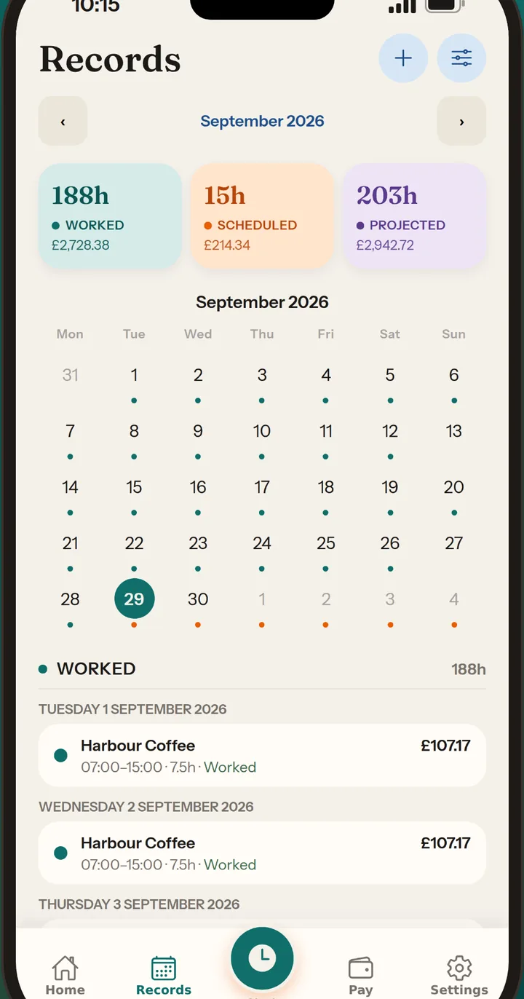

Kostenlos
Kostenlos
- 2 aktive Jobs
- 1 Schichtvorlage
- Stempeln, Übersicht und Lohn
- CSV-Export
- Erinnerungen, Widget und Live-Aktivität
- Sicherungsdatei oder optionale iCloud
Für Arbeit auf Stundenbasis
Stempeln Sie ein, erfassen Sie jeden Job und sehen Sie eine Schätzung dessen, was Sie ausgezahlt bekommen.

Ein Tipp für die heutige Schicht. Pausen halten den Timer an. Nachtschichten, die über Mitternacht gehen, zählen mit, und Sie können die Zeiten vor dem Speichern korrigieren.
Sehen Sie eine Woche, einen Monat oder einen Lohnzeitraum. Mehr als ein Job kann in derselben Ansicht stehen.
Zuerst der Bruttobetrag, dann die Steuer und die weiteren Abzüge, die Sie bei jedem Job eintragen. Im Vereinigten Königreich und auf der Isle of Man kann das ein illustrativer PAYE- oder ITIP-Betrag sein. Überall sonst geben Sie eigene Prozentsätze ein. Das sind Schätzungen, keine Lohnabrechnung.
Jeder Job hat eigenen Lohn, Überstunden, Urlaubsgeld und einen eigenen Lohnzeitraum. Speichern Sie eine Schicht als Vorlage. Kostenlos umfasst 2 aktive Jobs und 1 Vorlage.
Eine Erinnerung vor einer Schicht und auf Wunsch ein Hinweis, wenn Sie an einem gespeicherten Arbeitsplatz ankommen. Das Widget auf dem Home-Bildschirm zeigt, was als Nächstes kommt. Eine Live-Aktivität bleibt sichtbar, solange Sie eingestempelt sind.
Jobs, Schichten und Lohn bleiben auf dem iPhone. Exportieren Sie eine Sicherungsdatei oder eine CSV, oder schalten Sie eine optionale Kopie in Ihrer eigenen iCloud ein.



Kostenlos
Monatlich
oder jährlich, mit 1 Monat gratis für neue Abonnentinnen und Abonnenten. Der App Store zeigt den Preis für Ihr Land. Wenn das Jahresabo weniger kostet als zwölf Monate, zeigt der Abo-Bildschirm, wie viel Sie sparen.
Monatlich hat keine kostenlose Probe. Der Gratis-Monat des Jahresabos geht in den Jahrespreis über, sofern Sie nicht mindestens 24 Stunden vor dem Ende kündigen. Apple rechnet das Abo ab. Die Preise auf der Abo-Taste kommen aus dem App Store. Lohnbeträge in der App sind Schätzungen, keine Lohnabrechnung.
Öffnen Sie Graft, melden Sie sich an und gehen Sie zu Einstellungen → Konto. Monatlich hat keine kostenlose Probe. Jährlich ist ein Monat gratis für neue Abonnentinnen und Abonnenten, danach der Jahrespreis. Der gewählte Tarif zeigt den Preis aus dem App Store, mit Abonnieren und Käufe wiederherstellen.
Öffnen Sie auf demselben iPhone mit der Apple ID, die Premium gekauft hat, Einstellungen → Konto → Käufe wiederherstellen. Das Wiederherstellen legt Premium auf das Graft-Konto, bei dem Sie angemeldet sind.
Graft kann ein Apple-Abo nicht aus der App heraus kündigen. Apple rechnet es ab und Apple kündigt es.
Der Gratis-Monat des Jahresabos geht in den Jahrespreis über, sofern Sie nicht mindestens 24 Stunden vor dem Ende der Probe kündigen. Danach, und beim Monatsabo, kündigen Sie mindestens 24 Stunden vor dem Ende des Zeitraums, damit die nächste Verlängerung ausbleibt. Premium bleibt verfügbar, bis die bereits bezahlte Zeit endet. Die App zu löschen oder Ihr Graft-Konto zu löschen kündigt das Abo nicht.
Zahlung, Verlängerungen und Erstattungen erledigt Apple nach dem Lizenzvertrag für lizenzierte Programme von Apple für Endnutzer.
Die Beträge von Graft sind Schätzungen, keine Lohnabrechnung. Graft kennt Ihren Steuercode nicht, kein Studiendarlehen und nicht jeden Abzug, den Ihr Arbeitgeber ansetzt. Vergleichen Sie die Schätzung mit Ihrer Lohnabrechnung. Die Lohnabrechnung ist maßgeblich.
Jobs, Schichten und Lohn bleiben auf dem iPhone. Die Anmeldung (Name und E-Mail) übernimmt Clerk. Eine iCloud-Sicherung, wenn Sie sie einschalten, geht in Ihr eigenes iCloud-Konto. Siehe die Datenschutzrichtlinie.
Kündigen Sie in den Einstellungen Ihres App-Store-Kontos, mindestens 24 Stunden bevor eine Probe oder ein bezahlter Zeitraum endet. Die Schritte stehen unter Abos. Graft zu löschen kündigt das Abo nicht.
Schreiben Sie an GraftSupport@proton.me. Nennen Sie die iOS-Version und was Sie erwartet haben.
Fragen zum Datenschutz können an dieselbe Adresse gehen. Die Datenschutzrichtlinie und die Nutzungsbedingungen beschreiben, was die App heute tut.